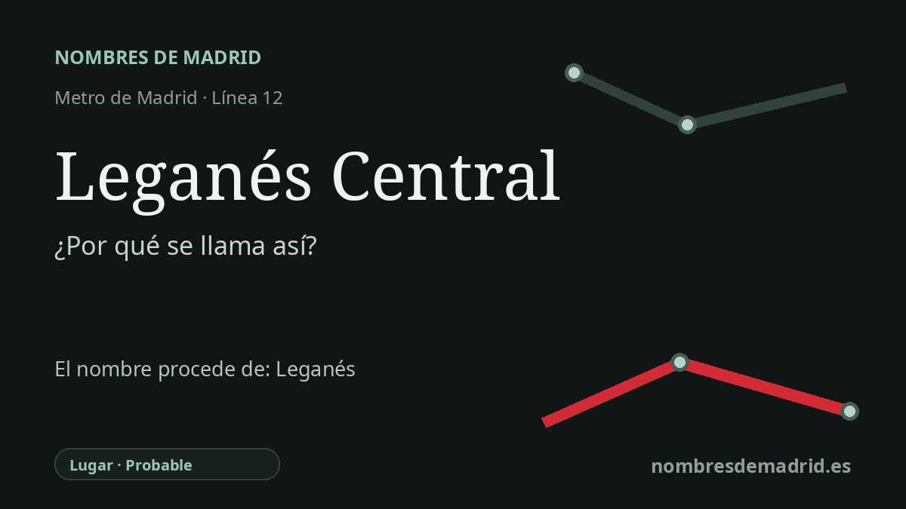

Publicado el · Investigación de Nombres de Madrid · Cómo verificamos cada origen · 7 fuentes consultadas
Respuesta rápida
Leganés Central debe su nombre al nodo central de transporte de Leganés, junto a la estación ferroviaria de la C-5. El nombre de la ciudad se explica tradicionalmente por légamo o légano, barro o limo, aunque la toponimia moderna considera esa explicación plausible, no segura.
La historia del nombre
Leganés Central es un nombre de Metro deliberadamente práctico. Orienta al viajero hacia el intercambiador ferroviario central de Leganés: la Comunidad de Madrid sitúa la estación de la línea 12 en la calle Virgen del Camino, junto a la estación de Renfe, donde enlaza con la línea C-5 de Cercanías.
La parte Central del nombre no es, por tanto, un topónimo antiguo, sino una descripción de transporte. Distingue esta parada de las demás estaciones de MetroSur en Leganés e indica que aquí está la conexión ferroviaria principal del municipio, asociada a la estación histórica que Renfe registra oficialmente como Leganés.
Detrás del nombre de la estación está el topónimo municipal Leganés. La tradición histórica local, repetida por el Ayuntamiento, cuenta que pobladores procedentes de lugares como Butarque y Overa se trasladaron a finales del siglo XIII a un emplazamiento más alto y saludable, cercano al agua. En ese relato, el primer asentamiento se asocia con Legamar o Leganar y con arcillas húmedas, barro o limo.
La explicación temprana más importante llega a través de la tradición de las Relaciones Topográficas del siglo XVI. La Comunidad de Madrid reproduce el pasaje según el cual el lugar se llamó Leganar porque había una laguna donde se hacía mucho légamo, y después Leganés por corrupción del vocablo. El DLE de la RAE define légamo como cieno, lodo o barro pegajoso y también como la parte arcillosa de las tierras de labor, lo que encaja con una explicación basada en el paisaje.
Conviene, sin embargo, mantener la cautela. Toponomasticon Hispaniae, en una ficha especializada de E. Nieto Ballester, califica Leganés como un topónimo difícil: la explicación por légamo o légano tiene valor por ser antigua y local, pero el paso lingüístico desde esas voces hasta Leganés no queda del todo claro. También se valoran otras posibilidades, como una relación con Liébana/lebanés o con el antropónimo latino Libanius, con distintos grados de verosimilitud. En la explicación pública, lo más preciso es decir que la estación se llama así por el Leganés central, mientras que el nombre de la ciudad se relaciona tradicional y plausiblemente, pero no de forma concluyente, con el barro o el limo.